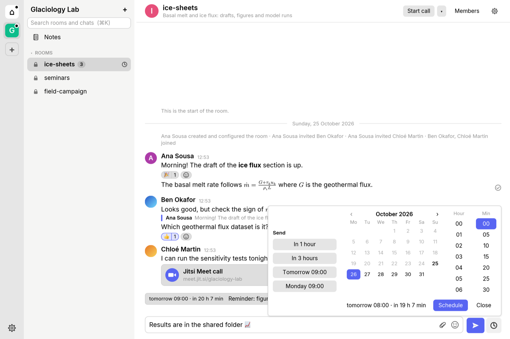

Send later
Write now, send tomorrow at nine. Pick a time in one click, see what is queued above the message box, and edit,
reschedule or send it now.
Matrix servers cannot schedule messages yet, so Mtrx keeps scheduled messages on your device
(encrypted) and sends them while Mtrx, or mtrx watch, is running. If the time passes while
neither runs, the message waits as overdue until you send or cancel it.

Notes to self
Your notes stay at the top of the room list in every space. Export them as Markdown with
mtrx notes.
Your room list, your way
Categories per space, favourites, low priority, unread first, and a colour for each space. They sync to your
other devices.
PDFs and pictures
Open PDFs in a zoomable viewer, view pictures large, copy or save them.
Calls by link
Jitsi, Google Meet and Zoom links become a Join button. Give a room a standing call link, or start a new call
with your space's service.
Keeps working offline
Messages show the moment you send them and go out when you are back online.
A command line too
mtrx reads, sends, schedules and watches rooms from the terminal, with the same account.
Encrypted
End-to-end encryption, device verification with emoji and key backup, from the
matrix-rust-sdk.
Open source
Free software under the GNU AGPL: what is built on Mtrx stays open too. Works with any Matrix server,
including matrix.org and your institute's.